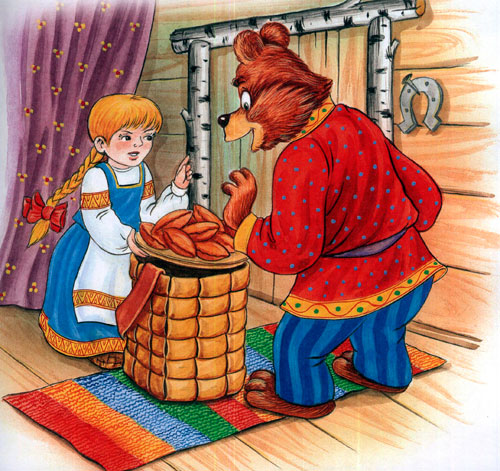

Маша и медведь – удивительная сказка о смелости и смекалке маленькой девочки, которая не побоялась перехитрить самого медведя. Пошла гулять Машенька по лесу с подругами и заблудилась, не исполнила наказ дедушки с бабушкой. Забрела Маша на полянку и увидела избушку. Жил там большой медведь, пришел он вечером домой и увидел девочку. Обрадовался, не пустил ее домой, и пришлось Маше жить в избушке, печку топить да кашу варить. Погоревала девочка и придумала, как от медведя сбежать. Попросила она мишку короб с пирожками в деревню отнести, да только сама в тот короб и прыгнула. Так домой и попала, а медведя обратно в лес прогнали.
Жили-были дедушка да бабушка. Была у них внучка Машенька.
Собрались раз подружки в лес - по грибы да по ягоды. Пришли звать с собой и Машеньку.
- Дедушка, бабушка, - говорит Машенька, - отпустите меня в лес с подружками!
Дедушка с бабушкой отвечают:
- - Иди, только смотри от подружек не отставай - не то заблудишься.
- Пришли девушки в лес, стали собирать грибы да ягоды. Вот Машенька - деревце за деревце, кустик за кустик - и ушла далеко-далеко от подружек.
- Стала она аукаться, стала их звать. А подружки не слышат, не отзываются.
Ходила, ходила Машенька по лесу - совсем заблудилась.
Пришла она в самую глушь, в самую чащу. Видит-стоит избушка. Постучала Машенька в дверь - не отвечают. Толкнула она дверь, дверь и открылась.

Вошла Машенька в избушку, села у окна на лавочку.
„Кто же здесь живёт? Почему никого не видно?.." А в той избушке жил большущий медведь. Только его тогда дома не было: он по лесу ходил. Вернулся вечером медведь, увидел Машеньку, обрадовался.
- - Ага, - говорит, - теперь не отпущу тебя! Будешь у меня жить. Будешь печку топить, будешь кашу варить, меня кашей кормить.

Потужила Маша, погоревала, да ничего не поделаешь. Стала она жить у медведя в избушке.
Медведь на целый день уйдёт в лес, а Машеньке наказывает никуда без него из избушки не выходить.
- - А если уйдёшь, - говорит, - всё равно поймаю и тогда уж съем!
- Стала Машенька думать, как ей от медведя убежать. Кругом лес, в какую сторону идти - не знает, спросить не у кого...
- Думала она, думала и придумала.
Приходит раз медведь из лесу, а Машенька и говорит ему:
- - Медведь, медведь, отпусти меня на денёк в деревню:
- я бабушке да дедушке гостинцев снесу.
- - Нет, - говорит медведь, - ты в лесу заблудишься. Давай гостинцы, я их сам отнесу!
А Машеньке того и надо!
Напекла она пирожков, достала большой-пребольшой короб и говорит медведю:
- Вот, смотри: я в короб положу пирожки, а ты отнеси их дедушке да бабушке. Да помни: короб по дороге не открывай, пирожки не вынимай. Я на дубок влезу, за тобой следить буду!
- - Ладно, - отвечает медведь, - давай короб! Машенька говорит:
- - Выйди на крылечко, посмотри, не идёт ли дождик! Только медведь вышел на крылечко, Машенька сейчас же залезла в короб, а на голову себе блюдо с пирожками поставила.
Вернулся медведь, видит - короб готов. Взвалил его на спину и пошёл в деревню.
Идёт медведь между ёлками, бредёт медведь между берёзками, в овражки спускается, на пригорки поднимается. Шёл-шёл, устал и говорит:
- Сяду на пенёк!
- Съем пирожок!

А Машенька из короба:
- Вижу, вижу!
- Не садись на пенёк!
- Не ешь пирожок!
- Неси бабушк!
- Неси дедушке!
- Ишь какая глазастая, - говорит медведь, - всё видит! Поднял он короб и пошёл дальше.
Шёл-шёл, шёл-шёл, остановился, сел и говорит:
- Сяду на пенёк!
- Съем пирожок!

- А Машенька из короба опять:
- Вижу, вижу!
- Не садись на пенёк!
- Не ешь пирожок!
- Неси бабушке
- Неси дедушке!
- Удивился медведь:
- Вот какая хитрая! Высоко сидит, далеко глядит! Встал и пошёл скорее.
Пришёл в деревню, нашёл дом, где дедушка с бабушкой жили, и давай изо всех сил стучать в ворота:
- Тук-тук-тук! Отпирайте, открывайте! Я вам от Машеньки гостинцев принёс.
А собаки почуяли медведя и бросились на него. Со всех дворов бегут, лают.

Испугался медведь, поставил короб у ворот и пустился в лес без оглядки.
Вышли тут дедушка да бабушка к воротам. Видят- короб стоит.
- Что это в коробе? - говорит бабушка.
А дедушка поднял крышку, смотрит и глазам своим не верит: в коробе Машенька сидит - живёхонька и здоровёхонька.
Обрадовались дедушка да бабушка. Стали Машеньку обнимать, целовать, умницей называть.